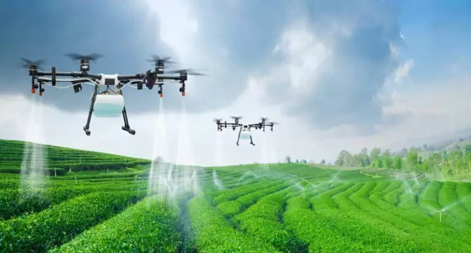
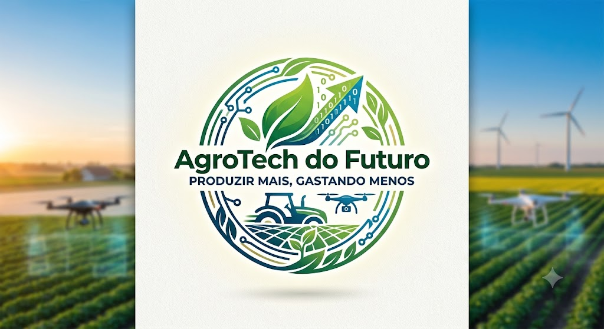
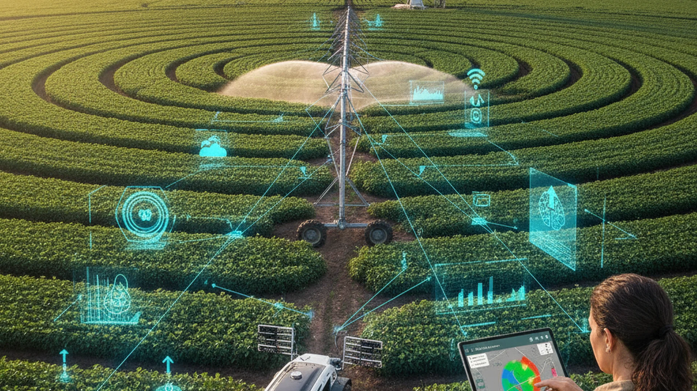

Drones & Irrigação
Mapeamento aéreo e irrigação por zonas para economizar água.
Como funciona
Drones coletam imagens multispectrais; IA identifica áreas que precisam de água ou nutrientes e alimenta sistemas de irrigação automatizados.

Agro 5.0 combina tecnologia e sustentabilidade para otimizar insumos, reduzir desperdício e aumentar produtividade.
Soluções que ajudam o produtor a aumentar produtividade reduzindo impactos ambientais.

Mapeamento aéreo e irrigação por zonas para economizar água.
Drones coletam imagens multispectrais; IA identifica áreas que precisam de água ou nutrientes e alimenta sistemas de irrigação automatizados.

Previsões e decisões automatizadas para reduzir insumos e riscos.
Modelos preditivos otimizam aplicação de fertilizantes e defensivos, reduzindo custos e impacto ambiental.

Monitoramento em tempo real da umidade e nutrientes.
Sensores transmitem dados para plataformas que ajustam irrigação e reposição de nutrientes automaticamente.

Máquinas de precisão que reduzem o uso de insumos.
Operações automatizadas aplicam apenas o necessário, reduzindo perdas e custos operacionais.
Números estimados de recursos economizados com tecnologias Agro 5.0
Fale conosco para saber como aplicar soluções Agro 5.0 na sua propriedade.